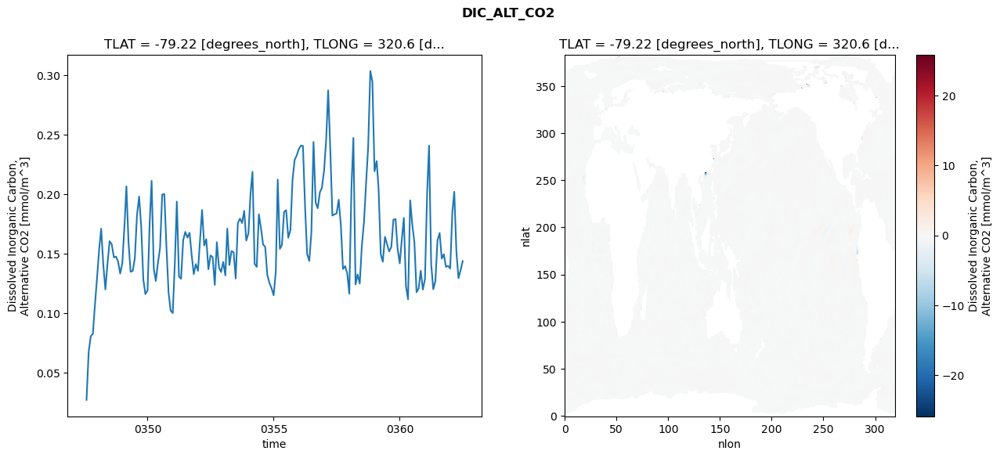
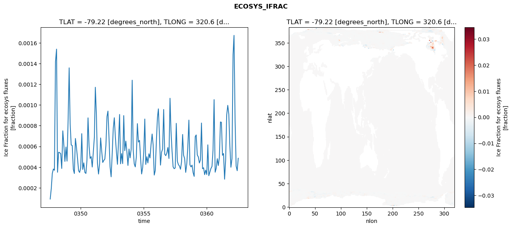
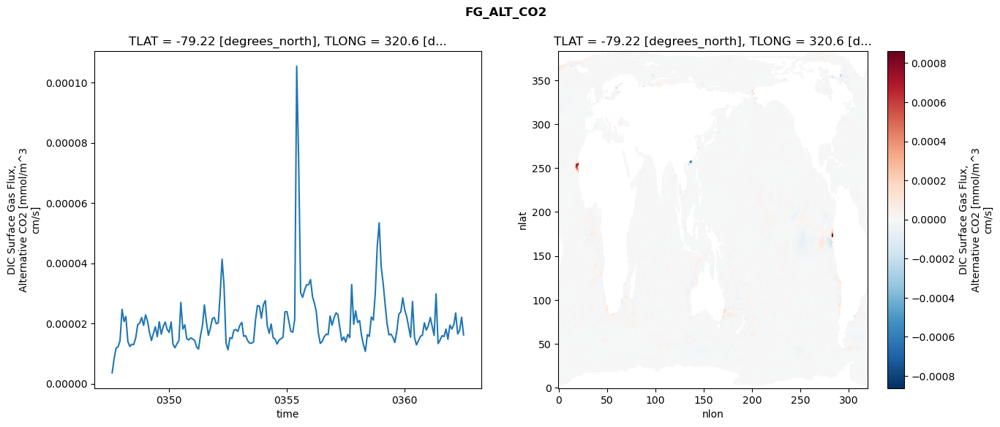
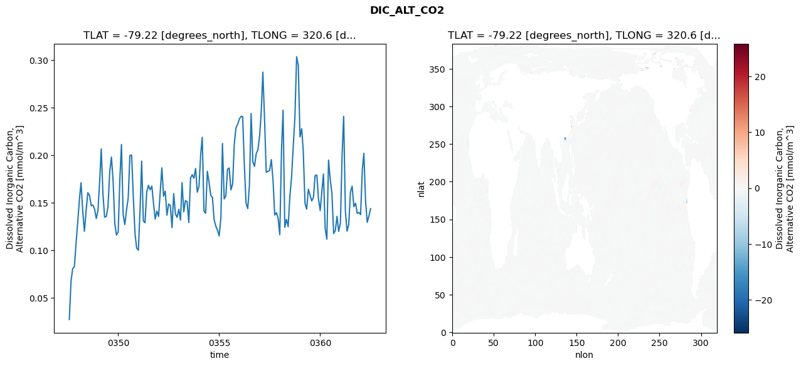
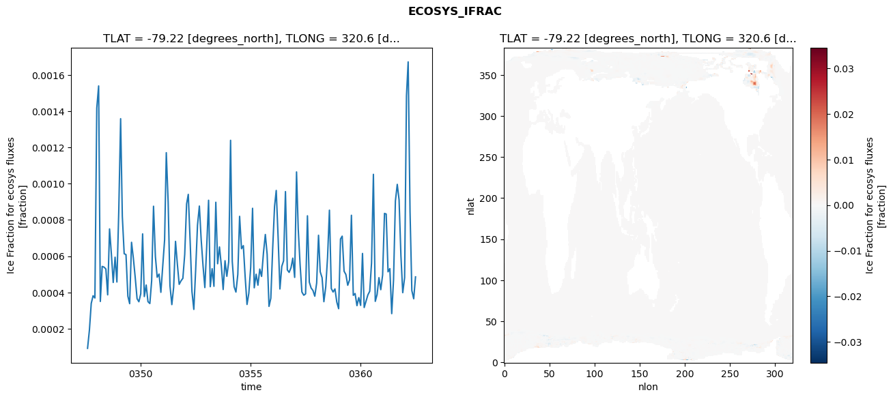
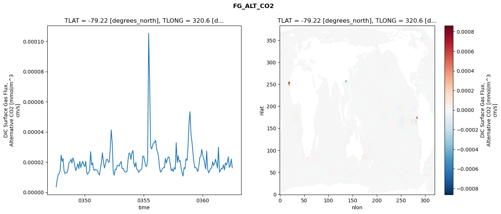

glb-dor_North_Atlantic_basin_035_1999-07-01_00142#
Simulation details#
Case: smyle.cdr-atlas-v0.glb-dor_North_Atlantic_basin_035_1999-07-01_00142.001
Basin: North_Atlantic_basin
Polygon: 35.0
Start date: 1999-07
Show code cell source Hide code cell source
import xarray as xr
import matplotlib.pyplot as plt
Show code cell source Hide code cell source
zarr_store = "/path/to/zarr/store"
# Parameters
zarr_store = "/global/cfs/projectdirs/m4746/Projects/Ocean-CDR-Atlas-v0/data/validation/smyle.cdr-atlas-v0.glb-dor_North_Atlantic_basin_035_1999-07-01_00142.001.validation.zarr"
Show code cell source Hide code cell source
%%time
ds_o = xr.open_zarr(zarr_store).compute()
ds_o
CPU times: user 606 ms, sys: 474 ms, total: 1.08 s
Wall time: 1.31 s
<xarray.Dataset> Size: 2MB
Dimensions: (nlat: 384, nlon: 320, time: 180)
Coordinates:
TLAT float64 8B -79.22
TLONG float64 8B 320.6
ULAT float64 8B -78.95
ULONG float64 8B 321.1
* time (time) object 1kB 0347-08-01 00:00:00 ... 0362-07-01 0...
z_t float32 4B 500.0
Dimensions without coordinates: nlat, nlon
Data variables:
ALK_ALT_CO2_diff (nlat, nlon) float32 492kB nan nan nan ... nan nan nan
ALK_ALT_CO2_rmse (time) float64 1kB 0.01457 0.02742 ... 0.1231 0.1317
DIC_ALT_CO2_diff (nlat, nlon) float32 492kB nan nan nan ... nan nan nan
DIC_ALT_CO2_rmse (time) float64 1kB 0.02708 0.06741 ... 0.1362 0.1437
ECOSYS_IFRAC_diff (nlat, nlon) float32 492kB nan nan nan ... nan nan nan
ECOSYS_IFRAC_rmse (time) float64 1kB 9.176e-05 0.0001931 ... 0.0004859
FG_ALT_CO2_diff (nlat, nlon) float32 492kB nan nan nan ... nan nan nan
FG_ALT_CO2_rmse (time) float64 1kB 3.606e-06 8.398e-06 ... 1.618e-05xarray.Dataset
- nlat: 384
- nlon: 320
- time: 180
- TLAT()float64-79.22
- long_name :
- array of t-grid latitudes
- units :
- degrees_north
array(-79.22052261)
- TLONG()float64320.6
- long_name :
- array of t-grid longitudes
- units :
- degrees_east
array(320.56250892)
- ULAT()float64-78.95
- long_name :
- array of u-grid latitudes
- units :
- degrees_north
array(-78.95289509)
- ULONG()float64321.1
- long_name :
- array of u-grid longitudes
- units :
- degrees_east
array(321.12500894)
- time(time)object0347-08-01 00:00:00 ... 0362-07-...
- bounds :
- time_bound
- long_name :
- time
array([cftime.DatetimeNoLeap(347, 8, 1, 0, 0, 0, 0, has_year_zero=True), cftime.DatetimeNoLeap(347, 9, 1, 0, 0, 0, 0, has_year_zero=True), cftime.DatetimeNoLeap(347, 10, 1, 0, 0, 0, 0, has_year_zero=True), cftime.DatetimeNoLeap(347, 11, 1, 0, 0, 0, 0, has_year_zero=True), cftime.DatetimeNoLeap(347, 12, 1, 0, 0, 0, 0, has_year_zero=True), cftime.DatetimeNoLeap(348, 1, 1, 0, 0, 0, 0, has_year_zero=True), cftime.DatetimeNoLeap(348, 2, 1, 0, 0, 0, 0, has_year_zero=True), cftime.DatetimeNoLeap(348, 3, 1, 0, 0, 0, 0, has_year_zero=True), cftime.DatetimeNoLeap(348, 4, 1, 0, 0, 0, 0, has_year_zero=True), cftime.DatetimeNoLeap(348, 5, 1, 0, 0, 0, 0, has_year_zero=True), cftime.DatetimeNoLeap(348, 6, 1, 0, 0, 0, 0, has_year_zero=True), cftime.DatetimeNoLeap(348, 7, 1, 0, 0, 0, 0, has_year_zero=True), cftime.DatetimeNoLeap(348, 8, 1, 0, 0, 0, 0, has_year_zero=True), cftime.DatetimeNoLeap(348, 9, 1, 0, 0, 0, 0, has_year_zero=True), cftime.DatetimeNoLeap(348, 10, 1, 0, 0, 0, 0, has_year_zero=True), cftime.DatetimeNoLeap(348, 11, 1, 0, 0, 0, 0, has_year_zero=True), cftime.DatetimeNoLeap(348, 12, 1, 0, 0, 0, 0, has_year_zero=True), cftime.DatetimeNoLeap(349, 1, 1, 0, 0, 0, 0, has_year_zero=True), cftime.DatetimeNoLeap(349, 2, 1, 0, 0, 0, 0, has_year_zero=True), cftime.DatetimeNoLeap(349, 3, 1, 0, 0, 0, 0, has_year_zero=True), cftime.DatetimeNoLeap(349, 4, 1, 0, 0, 0, 0, has_year_zero=True), cftime.DatetimeNoLeap(349, 5, 1, 0, 0, 0, 0, has_year_zero=True), cftime.DatetimeNoLeap(349, 6, 1, 0, 0, 0, 0, has_year_zero=True), cftime.DatetimeNoLeap(349, 7, 1, 0, 0, 0, 0, has_year_zero=True), cftime.DatetimeNoLeap(349, 8, 1, 0, 0, 0, 0, has_year_zero=True), cftime.DatetimeNoLeap(349, 9, 1, 0, 0, 0, 0, has_year_zero=True), cftime.DatetimeNoLeap(349, 10, 1, 0, 0, 0, 0, has_year_zero=True), cftime.DatetimeNoLeap(349, 11, 1, 0, 0, 0, 0, has_year_zero=True), cftime.DatetimeNoLeap(349, 12, 1, 0, 0, 0, 0, has_year_zero=True), cftime.DatetimeNoLeap(350, 1, 1, 0, 0, 0, 0, has_year_zero=True), cftime.DatetimeNoLeap(350, 2, 1, 0, 0, 0, 0, has_year_zero=True), cftime.DatetimeNoLeap(350, 3, 1, 0, 0, 0, 0, has_year_zero=True), cftime.DatetimeNoLeap(350, 4, 1, 0, 0, 0, 0, has_year_zero=True), cftime.DatetimeNoLeap(350, 5, 1, 0, 0, 0, 0, has_year_zero=True), cftime.DatetimeNoLeap(350, 6, 1, 0, 0, 0, 0, has_year_zero=True), cftime.DatetimeNoLeap(350, 7, 1, 0, 0, 0, 0, has_year_zero=True), cftime.DatetimeNoLeap(350, 8, 1, 0, 0, 0, 0, has_year_zero=True), cftime.DatetimeNoLeap(350, 9, 1, 0, 0, 0, 0, has_year_zero=True), cftime.DatetimeNoLeap(350, 10, 1, 0, 0, 0, 0, has_year_zero=True), cftime.DatetimeNoLeap(350, 11, 1, 0, 0, 0, 0, has_year_zero=True), cftime.DatetimeNoLeap(350, 12, 1, 0, 0, 0, 0, has_year_zero=True), cftime.DatetimeNoLeap(351, 1, 1, 0, 0, 0, 0, has_year_zero=True), cftime.DatetimeNoLeap(351, 2, 1, 0, 0, 0, 0, has_year_zero=True), cftime.DatetimeNoLeap(351, 3, 1, 0, 0, 0, 0, has_year_zero=True), cftime.DatetimeNoLeap(351, 4, 1, 0, 0, 0, 0, has_year_zero=True), cftime.DatetimeNoLeap(351, 5, 1, 0, 0, 0, 0, has_year_zero=True), cftime.DatetimeNoLeap(351, 6, 1, 0, 0, 0, 0, has_year_zero=True), cftime.DatetimeNoLeap(351, 7, 1, 0, 0, 0, 0, has_year_zero=True), cftime.DatetimeNoLeap(351, 8, 1, 0, 0, 0, 0, has_year_zero=True), cftime.DatetimeNoLeap(351, 9, 1, 0, 0, 0, 0, has_year_zero=True), cftime.DatetimeNoLeap(351, 10, 1, 0, 0, 0, 0, has_year_zero=True), cftime.DatetimeNoLeap(351, 11, 1, 0, 0, 0, 0, has_year_zero=True), cftime.DatetimeNoLeap(351, 12, 1, 0, 0, 0, 0, has_year_zero=True), cftime.DatetimeNoLeap(352, 1, 1, 0, 0, 0, 0, has_year_zero=True), cftime.DatetimeNoLeap(352, 2, 1, 0, 0, 0, 0, has_year_zero=True), cftime.DatetimeNoLeap(352, 3, 1, 0, 0, 0, 0, has_year_zero=True), cftime.DatetimeNoLeap(352, 4, 1, 0, 0, 0, 0, has_year_zero=True), cftime.DatetimeNoLeap(352, 5, 1, 0, 0, 0, 0, has_year_zero=True), cftime.DatetimeNoLeap(352, 6, 1, 0, 0, 0, 0, has_year_zero=True), cftime.DatetimeNoLeap(352, 7, 1, 0, 0, 0, 0, has_year_zero=True), cftime.DatetimeNoLeap(352, 8, 1, 0, 0, 0, 0, has_year_zero=True), cftime.DatetimeNoLeap(352, 9, 1, 0, 0, 0, 0, has_year_zero=True), cftime.DatetimeNoLeap(352, 10, 1, 0, 0, 0, 0, has_year_zero=True), cftime.DatetimeNoLeap(352, 11, 1, 0, 0, 0, 0, has_year_zero=True), cftime.DatetimeNoLeap(352, 12, 1, 0, 0, 0, 0, has_year_zero=True), cftime.DatetimeNoLeap(353, 1, 1, 0, 0, 0, 0, has_year_zero=True), cftime.DatetimeNoLeap(353, 2, 1, 0, 0, 0, 0, has_year_zero=True), cftime.DatetimeNoLeap(353, 3, 1, 0, 0, 0, 0, has_year_zero=True), cftime.DatetimeNoLeap(353, 4, 1, 0, 0, 0, 0, has_year_zero=True), cftime.DatetimeNoLeap(353, 5, 1, 0, 0, 0, 0, has_year_zero=True), cftime.DatetimeNoLeap(353, 6, 1, 0, 0, 0, 0, has_year_zero=True), cftime.DatetimeNoLeap(353, 7, 1, 0, 0, 0, 0, has_year_zero=True), cftime.DatetimeNoLeap(353, 8, 1, 0, 0, 0, 0, has_year_zero=True), cftime.DatetimeNoLeap(353, 9, 1, 0, 0, 0, 0, has_year_zero=True), cftime.DatetimeNoLeap(353, 10, 1, 0, 0, 0, 0, has_year_zero=True), cftime.DatetimeNoLeap(353, 11, 1, 0, 0, 0, 0, has_year_zero=True), cftime.DatetimeNoLeap(353, 12, 1, 0, 0, 0, 0, has_year_zero=True), cftime.DatetimeNoLeap(354, 1, 1, 0, 0, 0, 0, has_year_zero=True), cftime.DatetimeNoLeap(354, 2, 1, 0, 0, 0, 0, has_year_zero=True), cftime.DatetimeNoLeap(354, 3, 1, 0, 0, 0, 0, has_year_zero=True), cftime.DatetimeNoLeap(354, 4, 1, 0, 0, 0, 0, has_year_zero=True), cftime.DatetimeNoLeap(354, 5, 1, 0, 0, 0, 0, has_year_zero=True), cftime.DatetimeNoLeap(354, 6, 1, 0, 0, 0, 0, has_year_zero=True), cftime.DatetimeNoLeap(354, 7, 1, 0, 0, 0, 0, has_year_zero=True), cftime.DatetimeNoLeap(354, 8, 1, 0, 0, 0, 0, has_year_zero=True), cftime.DatetimeNoLeap(354, 9, 1, 0, 0, 0, 0, has_year_zero=True), cftime.DatetimeNoLeap(354, 10, 1, 0, 0, 0, 0, has_year_zero=True), cftime.DatetimeNoLeap(354, 11, 1, 0, 0, 0, 0, has_year_zero=True), cftime.DatetimeNoLeap(354, 12, 1, 0, 0, 0, 0, has_year_zero=True), cftime.DatetimeNoLeap(355, 1, 1, 0, 0, 0, 0, has_year_zero=True), cftime.DatetimeNoLeap(355, 2, 1, 0, 0, 0, 0, has_year_zero=True), cftime.DatetimeNoLeap(355, 3, 1, 0, 0, 0, 0, has_year_zero=True), cftime.DatetimeNoLeap(355, 4, 1, 0, 0, 0, 0, has_year_zero=True), cftime.DatetimeNoLeap(355, 5, 1, 0, 0, 0, 0, has_year_zero=True), cftime.DatetimeNoLeap(355, 6, 1, 0, 0, 0, 0, has_year_zero=True), cftime.DatetimeNoLeap(355, 7, 1, 0, 0, 0, 0, has_year_zero=True), cftime.DatetimeNoLeap(355, 8, 1, 0, 0, 0, 0, has_year_zero=True), cftime.DatetimeNoLeap(355, 9, 1, 0, 0, 0, 0, has_year_zero=True), cftime.DatetimeNoLeap(355, 10, 1, 0, 0, 0, 0, has_year_zero=True), cftime.DatetimeNoLeap(355, 11, 1, 0, 0, 0, 0, has_year_zero=True), cftime.DatetimeNoLeap(355, 12, 1, 0, 0, 0, 0, has_year_zero=True), cftime.DatetimeNoLeap(356, 1, 1, 0, 0, 0, 0, has_year_zero=True), cftime.DatetimeNoLeap(356, 2, 1, 0, 0, 0, 0, has_year_zero=True), cftime.DatetimeNoLeap(356, 3, 1, 0, 0, 0, 0, has_year_zero=True), cftime.DatetimeNoLeap(356, 4, 1, 0, 0, 0, 0, has_year_zero=True), cftime.DatetimeNoLeap(356, 5, 1, 0, 0, 0, 0, has_year_zero=True), cftime.DatetimeNoLeap(356, 6, 1, 0, 0, 0, 0, has_year_zero=True), cftime.DatetimeNoLeap(356, 7, 1, 0, 0, 0, 0, has_year_zero=True), cftime.DatetimeNoLeap(356, 8, 1, 0, 0, 0, 0, has_year_zero=True), cftime.DatetimeNoLeap(356, 9, 1, 0, 0, 0, 0, has_year_zero=True), cftime.DatetimeNoLeap(356, 10, 1, 0, 0, 0, 0, has_year_zero=True), cftime.DatetimeNoLeap(356, 11, 1, 0, 0, 0, 0, has_year_zero=True), cftime.DatetimeNoLeap(356, 12, 1, 0, 0, 0, 0, has_year_zero=True), cftime.DatetimeNoLeap(357, 1, 1, 0, 0, 0, 0, has_year_zero=True), cftime.DatetimeNoLeap(357, 2, 1, 0, 0, 0, 0, has_year_zero=True), cftime.DatetimeNoLeap(357, 3, 1, 0, 0, 0, 0, has_year_zero=True), cftime.DatetimeNoLeap(357, 4, 1, 0, 0, 0, 0, has_year_zero=True), cftime.DatetimeNoLeap(357, 5, 1, 0, 0, 0, 0, has_year_zero=True), cftime.DatetimeNoLeap(357, 6, 1, 0, 0, 0, 0, has_year_zero=True), cftime.DatetimeNoLeap(357, 7, 1, 0, 0, 0, 0, has_year_zero=True), cftime.DatetimeNoLeap(357, 8, 1, 0, 0, 0, 0, has_year_zero=True), cftime.DatetimeNoLeap(357, 9, 1, 0, 0, 0, 0, has_year_zero=True), cftime.DatetimeNoLeap(357, 10, 1, 0, 0, 0, 0, has_year_zero=True), cftime.DatetimeNoLeap(357, 11, 1, 0, 0, 0, 0, has_year_zero=True), cftime.DatetimeNoLeap(357, 12, 1, 0, 0, 0, 0, has_year_zero=True), cftime.DatetimeNoLeap(358, 1, 1, 0, 0, 0, 0, has_year_zero=True), cftime.DatetimeNoLeap(358, 2, 1, 0, 0, 0, 0, has_year_zero=True), cftime.DatetimeNoLeap(358, 3, 1, 0, 0, 0, 0, has_year_zero=True), cftime.DatetimeNoLeap(358, 4, 1, 0, 0, 0, 0, has_year_zero=True), cftime.DatetimeNoLeap(358, 5, 1, 0, 0, 0, 0, has_year_zero=True), cftime.DatetimeNoLeap(358, 6, 1, 0, 0, 0, 0, has_year_zero=True), cftime.DatetimeNoLeap(358, 7, 1, 0, 0, 0, 0, has_year_zero=True), cftime.DatetimeNoLeap(358, 8, 1, 0, 0, 0, 0, has_year_zero=True), cftime.DatetimeNoLeap(358, 9, 1, 0, 0, 0, 0, has_year_zero=True), cftime.DatetimeNoLeap(358, 10, 1, 0, 0, 0, 0, has_year_zero=True), cftime.DatetimeNoLeap(358, 11, 1, 0, 0, 0, 0, has_year_zero=True), cftime.DatetimeNoLeap(358, 12, 1, 0, 0, 0, 0, has_year_zero=True), cftime.DatetimeNoLeap(359, 1, 1, 0, 0, 0, 0, has_year_zero=True), cftime.DatetimeNoLeap(359, 2, 1, 0, 0, 0, 0, has_year_zero=True), cftime.DatetimeNoLeap(359, 3, 1, 0, 0, 0, 0, has_year_zero=True), cftime.DatetimeNoLeap(359, 4, 1, 0, 0, 0, 0, has_year_zero=True), cftime.DatetimeNoLeap(359, 5, 1, 0, 0, 0, 0, has_year_zero=True), cftime.DatetimeNoLeap(359, 6, 1, 0, 0, 0, 0, has_year_zero=True), cftime.DatetimeNoLeap(359, 7, 1, 0, 0, 0, 0, has_year_zero=True), cftime.DatetimeNoLeap(359, 8, 1, 0, 0, 0, 0, has_year_zero=True), cftime.DatetimeNoLeap(359, 9, 1, 0, 0, 0, 0, has_year_zero=True), cftime.DatetimeNoLeap(359, 10, 1, 0, 0, 0, 0, has_year_zero=True), cftime.DatetimeNoLeap(359, 11, 1, 0, 0, 0, 0, has_year_zero=True), cftime.DatetimeNoLeap(359, 12, 1, 0, 0, 0, 0, has_year_zero=True), cftime.DatetimeNoLeap(360, 1, 1, 0, 0, 0, 0, has_year_zero=True), cftime.DatetimeNoLeap(360, 2, 1, 0, 0, 0, 0, has_year_zero=True), cftime.DatetimeNoLeap(360, 3, 1, 0, 0, 0, 0, has_year_zero=True), cftime.DatetimeNoLeap(360, 4, 1, 0, 0, 0, 0, has_year_zero=True), cftime.DatetimeNoLeap(360, 5, 1, 0, 0, 0, 0, has_year_zero=True), cftime.DatetimeNoLeap(360, 6, 1, 0, 0, 0, 0, has_year_zero=True), cftime.DatetimeNoLeap(360, 7, 1, 0, 0, 0, 0, has_year_zero=True), cftime.DatetimeNoLeap(360, 8, 1, 0, 0, 0, 0, has_year_zero=True), cftime.DatetimeNoLeap(360, 9, 1, 0, 0, 0, 0, has_year_zero=True), cftime.DatetimeNoLeap(360, 10, 1, 0, 0, 0, 0, has_year_zero=True), cftime.DatetimeNoLeap(360, 11, 1, 0, 0, 0, 0, has_year_zero=True), cftime.DatetimeNoLeap(360, 12, 1, 0, 0, 0, 0, has_year_zero=True), cftime.DatetimeNoLeap(361, 1, 1, 0, 0, 0, 0, has_year_zero=True), cftime.DatetimeNoLeap(361, 2, 1, 0, 0, 0, 0, has_year_zero=True), cftime.DatetimeNoLeap(361, 3, 1, 0, 0, 0, 0, has_year_zero=True), cftime.DatetimeNoLeap(361, 4, 1, 0, 0, 0, 0, has_year_zero=True), cftime.DatetimeNoLeap(361, 5, 1, 0, 0, 0, 0, has_year_zero=True), cftime.DatetimeNoLeap(361, 6, 1, 0, 0, 0, 0, has_year_zero=True), cftime.DatetimeNoLeap(361, 7, 1, 0, 0, 0, 0, has_year_zero=True), cftime.DatetimeNoLeap(361, 8, 1, 0, 0, 0, 0, has_year_zero=True), cftime.DatetimeNoLeap(361, 9, 1, 0, 0, 0, 0, has_year_zero=True), cftime.DatetimeNoLeap(361, 10, 1, 0, 0, 0, 0, has_year_zero=True), cftime.DatetimeNoLeap(361, 11, 1, 0, 0, 0, 0, has_year_zero=True), cftime.DatetimeNoLeap(361, 12, 1, 0, 0, 0, 0, has_year_zero=True), cftime.DatetimeNoLeap(362, 1, 1, 0, 0, 0, 0, has_year_zero=True), cftime.DatetimeNoLeap(362, 2, 1, 0, 0, 0, 0, has_year_zero=True), cftime.DatetimeNoLeap(362, 3, 1, 0, 0, 0, 0, has_year_zero=True), cftime.DatetimeNoLeap(362, 4, 1, 0, 0, 0, 0, has_year_zero=True), cftime.DatetimeNoLeap(362, 5, 1, 0, 0, 0, 0, has_year_zero=True), cftime.DatetimeNoLeap(362, 6, 1, 0, 0, 0, 0, has_year_zero=True), cftime.DatetimeNoLeap(362, 7, 1, 0, 0, 0, 0, has_year_zero=True)], dtype=object) - z_t()float32500.0
- long_name :
- depth from surface to midpoint of layer
- positive :
- down
- units :
- centimeters
- valid_max :
- 537500.0
- valid_min :
- 500.0
array(500., dtype=float32)
- ALK_ALT_CO2_diff(nlat, nlon)float32nan nan nan nan ... nan nan nan nan
- cell_methods :
- time: mean
- grid_loc :
- 3111
- long_name :
- Alkalinity, Alternative CO2
- units :
- meq/m^3
array([[ nan, nan, nan, ..., nan, nan, nan], [ nan, nan, nan, ..., nan, nan, nan], [0.00146484, 0.00341797, 0.01416016, ..., nan, nan, nan], ..., [ nan, nan, nan, ..., nan, nan, nan], [ nan, nan, nan, ..., nan, nan, nan], [ nan, nan, nan, ..., nan, nan, nan]], dtype=float32) - ALK_ALT_CO2_rmse(time)float640.01457 0.02742 ... 0.1231 0.1317
- cell_methods :
- time: mean
- grid_loc :
- 3111
- long_name :
- Alkalinity, Alternative CO2
- units :
- meq/m^3
array([0.01457036, 0.02741871, 0.02628667, 0.03600082, 0.042526 , 0.05234517, 0.10150308, 0.13407461, 0.10177414, 0.0871826 , 0.1040238 , 0.10639404, 0.09350033, 0.06247753, 0.05297074, 0.05424122, 0.061716 , 0.08134293, 0.13483169, 0.18434381, 0.12989845, 0.10661626, 0.10713733, 0.11639425, 0.15897873, 0.17100521, 0.13974686, 0.08527252, 0.06011931, 0.06620412, 0.15810989, 0.21057355, 0.12165657, 0.11159923, 0.12745705, 0.13272924, 0.16962153, 0.16764182, 0.12031526, 0.08092592, 0.06129281, 0.05513502, 0.12525282, 0.19318725, 0.10870236, 0.0917034 , 0.13018814, 0.12966121, 0.12822267, 0.13577796, 0.0948365 , 0.07574183, 0.07723641, 0.07802348, 0.11210742, 0.1549389 , 0.11492008, 0.11720845, 0.1055892 , 0.12218229, 0.1114206 , 0.07829944, 0.08474096, 0.07163267, 0.06600563, 0.07457926, 0.08291462, 0.1454978 , 0.10641546, 0.13300927, 0.13578698, 0.09773055, 0.16139182, 0.1063562 , 0.07521374, 0.09324476, 0.08412786, 0.07913228, 0.15278892, 0.18994591, 0.10233911, 0.10455433, 0.15847881, 0.14536037, 0.12919412, 0.1278552 , 0.08484413, 0.07731448, 0.06775795, 0.06838103, 0.09256551, 0.1773751 , 0.10885419, 0.09908595, 0.13043722, 0.12620965, 0.11803763, 0.12056078, 0.10911124, 0.11889144, 0.12638446, 0.11118641, 0.12365819, 0.15361394, 0.10579295, 0.09053013, 0.10160538, 0.12788693, 0.22696205, 0.17223233, 0.11708603, 0.13746994, 0.14807491, 0.15498998, 0.19611586, 0.25715695, 0.21017416, 0.13638791, 0.15020962, 0.13899913, 0.16600572, 0.15542186, 0.10406975, 0.11170424, 0.1140883 , 0.09170342, 0.20899346, 0.26193977, 0.11298748, 0.12790301, 0.10568684, 0.11228443, 0.11848462, 0.08841433, 0.09636774, 0.10554647, 0.10197275, 0.08797319, 0.11942813, 0.14891854, 0.08868468, 0.10621088, 0.14083878, 0.13245856, 0.11961836, 0.08416643, 0.09839796, 0.08327821, 0.0718671 , 0.07211819, 0.10344671, 0.13886789, 0.07769341, 0.07013231, 0.18585847, 0.15310804, 0.14014471, 0.07154332, 0.06193611, 0.07150436, 0.0737462 , 0.07878384, 0.17695721, 0.22324828, 0.10329163, 0.08899756, 0.10599939, 0.13842304, 0.14939791, 0.11462953, 0.1214026 , 0.09278918, 0.08668808, 0.07606536, 0.14675009, 0.16106922, 0.1071256 , 0.09879339, 0.12311578, 0.1316936 ]) - DIC_ALT_CO2_diff(nlat, nlon)float32nan nan nan nan ... nan nan nan nan
- cell_methods :
- time: mean
- grid_loc :
- 3111
- long_name :
- Dissolved Inorganic Carbon, Alternative CO2
- units :
- mmol/m^3
array([[ nan, nan, nan, ..., nan, nan, nan], [ nan, nan, nan, ..., nan, nan, nan], [-0.0090332 , -0.00683594, -0.00317383, ..., nan, nan, nan], ..., [ nan, nan, nan, ..., nan, nan, nan], [ nan, nan, nan, ..., nan, nan, nan], [ nan, nan, nan, ..., nan, nan, nan]], dtype=float32) - DIC_ALT_CO2_rmse(time)float640.02708 0.06741 ... 0.1362 0.1437
- cell_methods :
- time: mean
- grid_loc :
- 3111
- long_name :
- Dissolved Inorganic Carbon, Alternative CO2
- units :
- mmol/m^3
array([0.02707824, 0.06741261, 0.08052615, 0.08273855, 0.10719712, 0.13024491, 0.15465396, 0.17101649, 0.14038686, 0.11990698, 0.14197024, 0.16044723, 0.15779453, 0.14684534, 0.14755885, 0.14323415, 0.13332591, 0.1418603 , 0.17338741, 0.20658859, 0.15892042, 0.13475456, 0.1355421 , 0.14604313, 0.1820999 , 0.19801226, 0.17325376, 0.12817421, 0.1159617 , 0.11909387, 0.17602912, 0.21122008, 0.13757905, 0.12699494, 0.14245922, 0.15478695, 0.19969283, 0.20012589, 0.15646664, 0.1175632 , 0.10215821, 0.10004617, 0.1437495 , 0.19378355, 0.13081592, 0.12887621, 0.16133334, 0.1682899 , 0.16347999, 0.16753529, 0.14928339, 0.13281606, 0.14118462, 0.1355321 , 0.16264914, 0.18668019, 0.15680016, 0.16217485, 0.13691684, 0.14853443, 0.14706733, 0.1237153 , 0.15961759, 0.13832237, 0.13453307, 0.14301596, 0.13173772, 0.17106046, 0.14039646, 0.15220497, 0.151104 , 0.12908863, 0.17573348, 0.17944672, 0.17575766, 0.18598748, 0.16101211, 0.16718219, 0.20111798, 0.21877618, 0.14138877, 0.13886498, 0.18305043, 0.17172896, 0.15775891, 0.15555836, 0.13212419, 0.12534744, 0.12105235, 0.11502267, 0.13469196, 0.21230539, 0.1539874 , 0.15741396, 0.18514338, 0.18650418, 0.16342106, 0.16985219, 0.2120381 , 0.22896069, 0.23257989, 0.2380586 , 0.24086465, 0.24058611, 0.18897092, 0.14954165, 0.14381286, 0.16793168, 0.24392232, 0.19296028, 0.18815883, 0.20161707, 0.20544899, 0.2199798 , 0.2467553 , 0.28731475, 0.23720908, 0.18200829, 0.18306011, 0.18381687, 0.19529716, 0.17365487, 0.13704729, 0.13952368, 0.13368072, 0.11634658, 0.20552173, 0.24730935, 0.12408797, 0.13252555, 0.12484306, 0.15611966, 0.17618917, 0.20929849, 0.23993349, 0.30353479, 0.29461368, 0.21920395, 0.22781572, 0.20412536, 0.14960802, 0.14317946, 0.16416138, 0.15821758, 0.15185222, 0.15559188, 0.17848805, 0.17912634, 0.15408563, 0.14180337, 0.16258971, 0.18007255, 0.12253745, 0.11164729, 0.19481628, 0.17448646, 0.15949829, 0.11756971, 0.1205988 , 0.13566364, 0.1197823 , 0.12865117, 0.20083508, 0.24086359, 0.14117362, 0.12006374, 0.12709861, 0.16110667, 0.16737771, 0.14584118, 0.14948602, 0.13886596, 0.13969211, 0.13749925, 0.18471512, 0.20201162, 0.15142503, 0.12932277, 0.13617811, 0.14368102]) - ECOSYS_IFRAC_diff(nlat, nlon)float32nan nan nan nan ... nan nan nan nan
- cell_methods :
- time: mean
- grid_loc :
- 2110
- long_name :
- Ice Fraction for ecosys fluxes
- units :
- fraction
array([[ nan, nan, nan, ..., nan, nan, nan], [ nan, nan, nan, ..., nan, nan, nan], [ 1.7881393e-07, -1.5556812e-05, -9.4771385e-06, ..., nan, nan, nan], ..., [ nan, nan, nan, ..., nan, nan, nan], [ nan, nan, nan, ..., nan, nan, nan], [ nan, nan, nan, ..., nan, nan, nan]], dtype=float32) - ECOSYS_IFRAC_rmse(time)float649.176e-05 0.0001931 ... 0.0004859
- cell_methods :
- time: mean
- grid_loc :
- 2110
- long_name :
- Ice Fraction for ecosys fluxes
- units :
- fraction
array([9.17649429e-05, 1.93109135e-04, 3.39543926e-04, 3.81893433e-04, 3.69416225e-04, 1.41715040e-03, 1.53881011e-03, 3.50371209e-04, 5.43524814e-04, 5.39834537e-04, 5.29269607e-04, 3.86812182e-04, 7.50289715e-04, 6.09487756e-04, 4.55011907e-04, 5.94399122e-04, 4.57538201e-04, 8.47766030e-04, 1.35814707e-03, 8.20057782e-04, 6.13644132e-04, 6.08589662e-04, 3.79535390e-04, 3.38224188e-04, 6.76562113e-04, 5.86589735e-04, 4.83121298e-04, 3.65390845e-04, 3.48649981e-04, 3.92818067e-04, 7.22908200e-04, 3.77439913e-04, 4.40927550e-04, 3.49188136e-04, 3.38894765e-04, 4.64558783e-04, 8.75410187e-04, 5.98116495e-04, 4.83823904e-04, 5.01468181e-04, 4.00760825e-04, 5.47530955e-04, 6.90018683e-04, 1.17075952e-03, 8.97247137e-04, 4.37538346e-04, 3.32992697e-04, 4.28377503e-04, 6.81709282e-04, 5.54694647e-04, 4.44665032e-04, 4.64434899e-04, 4.77761773e-04, 6.10029410e-04, 8.88221167e-04, 9.40780894e-04, 6.80741732e-04, 4.04559480e-04, 3.06561482e-04, 5.20280210e-04, 7.70437519e-04, 8.76378274e-04, 6.91755928e-04, 5.46345203e-04, 4.26935522e-04, 6.53990304e-04, 9.08317901e-04, 4.31701426e-04, 5.30782211e-04, 4.33813267e-04, 8.97390609e-04, 5.58310667e-04, 6.50836062e-04, 5.46160790e-04, 4.16079840e-04, 5.74923116e-04, 4.89010393e-04, 5.68698844e-04, 1.23888744e-03, 5.71036168e-04, ... 3.67719877e-04, 6.42492133e-04, 8.74589012e-04, 9.62392782e-04, 7.05601057e-04, 4.19170365e-04, 5.43508973e-04, 5.74371032e-04, 9.56204822e-04, 5.24306622e-04, 5.10648871e-04, 5.36062633e-04, 5.89147928e-04, 4.83073878e-04, 1.06456206e-03, 7.50613416e-04, 5.53644085e-04, 4.02591488e-04, 3.84718082e-04, 3.92022324e-04, 8.22599013e-04, 4.56744971e-04, 4.24657834e-04, 4.10477019e-04, 3.79230455e-04, 4.52074348e-04, 7.15315832e-04, 5.14073308e-04, 4.81352723e-04, 3.49067540e-04, 4.31403369e-04, 5.93901688e-04, 8.53692743e-04, 4.21444909e-04, 4.02349193e-04, 4.19529809e-04, 3.47304994e-04, 3.10500533e-04, 6.94840834e-04, 7.10507879e-04, 5.17160908e-04, 4.99058172e-04, 4.39532588e-04, 4.69007559e-04, 8.25589713e-04, 3.84178890e-04, 3.93982718e-04, 3.27074099e-04, 3.71408229e-04, 3.28642965e-04, 6.15026386e-04, 3.16954360e-04, 3.52886357e-04, 3.86414138e-04, 4.06366237e-04, 5.62545634e-04, 1.05138303e-03, 3.50907469e-04, 3.88235373e-04, 4.81473086e-04, 4.15277323e-04, 4.96380682e-04, 8.35724801e-04, 8.32501208e-04, 5.13752769e-04, 5.31379412e-04, 2.83172701e-04, 4.67895258e-04, 9.04144783e-04, 9.95996879e-04, 9.10737975e-04, 6.01508812e-04, 3.98758219e-04, 4.81891943e-04, 1.48474371e-03, 1.67151401e-03, 8.45164746e-04, 4.10269225e-04, 3.65262347e-04, 4.85949541e-04]) - FG_ALT_CO2_diff(nlat, nlon)float32nan nan nan nan ... nan nan nan nan
- cell_methods :
- time: mean
- grid_loc :
- 2110
- long_name :
- DIC Surface Gas Flux, Alternative CO2
- units :
- mmol/m^3 cm/s
array([[ nan, nan, nan, ..., nan, nan, nan], [ nan, nan, nan, ..., nan, nan, nan], [1.0893359e-08, 3.3524429e-08, 1.7344249e-08, ..., nan, nan, nan], ..., [ nan, nan, nan, ..., nan, nan, nan], [ nan, nan, nan, ..., nan, nan, nan], [ nan, nan, nan, ..., nan, nan, nan]], dtype=float32) - FG_ALT_CO2_rmse(time)float643.606e-06 8.398e-06 ... 1.618e-05
- cell_methods :
- time: mean
- grid_loc :
- 2110
- long_name :
- DIC Surface Gas Flux, Alternative CO2
- units :
- mmol/m^3 cm/s
array([3.60625300e-06, 8.39832970e-06, 1.18041323e-05, 1.22218101e-05, 1.42781585e-05, 2.46841600e-05, 2.06143035e-05, 2.23339660e-05, 1.40041231e-05, 1.23567186e-05, 1.30781705e-05, 1.29774422e-05, 1.52197814e-05, 1.95944412e-05, 2.00886429e-05, 2.19508572e-05, 1.93258440e-05, 2.28754770e-05, 2.06598461e-05, 1.71762920e-05, 1.43262392e-05, 1.66014364e-05, 1.88895787e-05, 1.56106450e-05, 2.05388405e-05, 1.64369094e-05, 1.89543568e-05, 2.04600401e-05, 1.80114550e-05, 1.70222530e-05, 2.04784136e-05, 1.31007134e-05, 1.19214469e-05, 1.32141688e-05, 1.42886762e-05, 2.69755659e-05, 1.81354422e-05, 1.95244703e-05, 1.48843239e-05, 1.45307864e-05, 1.52247100e-05, 1.48090445e-05, 1.43261951e-05, 1.22624315e-05, 1.14772553e-05, 1.58795278e-05, 1.92972468e-05, 2.61522760e-05, 2.04411338e-05, 1.60544336e-05, 1.83741464e-05, 2.15503239e-05, 2.19681118e-05, 1.98976099e-05, 2.01785422e-05, 2.92888559e-05, 4.13466162e-05, 3.25800448e-05, 1.34863092e-05, 1.12439187e-05, 1.52828242e-05, 1.49719264e-05, 1.77502435e-05, 1.79916448e-05, 1.73554087e-05, 1.93559143e-05, 2.03661506e-05, 1.57396687e-05, 1.59154226e-05, 1.43447469e-05, 1.34487690e-05, 1.34261235e-05, 1.38423165e-05, 2.12210309e-05, 2.59596894e-05, 2.57092810e-05, 2.17452063e-05, 2.62550616e-05, 2.76173596e-05, 1.93209832e-05, ... 3.28314452e-05, 3.45636745e-05, 2.89161752e-05, 2.68270073e-05, 2.38869530e-05, 1.69995209e-05, 1.33683161e-05, 1.40106130e-05, 1.55780904e-05, 1.64034185e-05, 1.62792935e-05, 2.24558317e-05, 1.93764679e-05, 2.18779886e-05, 2.35250255e-05, 2.29641947e-05, 1.84400933e-05, 1.43233836e-05, 1.54740473e-05, 1.38060902e-05, 1.63564643e-05, 1.52933365e-05, 3.29054369e-05, 1.97038650e-05, 2.41787679e-05, 2.03212330e-05, 2.09652947e-05, 1.61556613e-05, 1.29190440e-05, 1.07028191e-05, 1.62961769e-05, 1.56856008e-05, 2.21315752e-05, 2.10898723e-05, 2.99839192e-05, 4.57343304e-05, 5.34089262e-05, 3.88082478e-05, 3.31710522e-05, 2.67593363e-05, 2.00487248e-05, 1.62069696e-05, 1.64536796e-05, 1.53734572e-05, 1.36759522e-05, 1.75689850e-05, 2.30756876e-05, 2.38259036e-05, 2.84867731e-05, 2.44513847e-05, 2.21820747e-05, 1.89283882e-05, 1.54194724e-05, 2.72931810e-05, 1.53529941e-05, 1.28901371e-05, 1.42502814e-05, 1.57448068e-05, 1.60482131e-05, 2.02021660e-05, 1.77645157e-05, 1.92305754e-05, 2.19601116e-05, 1.91554650e-05, 1.60092641e-05, 2.98522630e-05, 1.33055137e-05, 1.44388806e-05, 1.59193566e-05, 1.56464039e-05, 1.81253230e-05, 1.47378359e-05, 1.94425239e-05, 1.81445699e-05, 1.97017931e-05, 2.34614616e-05, 1.65121878e-05, 1.77061340e-05, 2.20651640e-05, 1.61783338e-05])
- timePandasIndex
PandasIndex(CFTimeIndex([0347-08-01 00:00:00, 0347-09-01 00:00:00, 0347-10-01 00:00:00, 0347-11-01 00:00:00, 0347-12-01 00:00:00, 0348-01-01 00:00:00, 0348-02-01 00:00:00, 0348-03-01 00:00:00, 0348-04-01 00:00:00, 0348-05-01 00:00:00, ... 0361-10-01 00:00:00, 0361-11-01 00:00:00, 0361-12-01 00:00:00, 0362-01-01 00:00:00, 0362-02-01 00:00:00, 0362-03-01 00:00:00, 0362-04-01 00:00:00, 0362-05-01 00:00:00, 0362-06-01 00:00:00, 0362-07-01 00:00:00], dtype='object', length=180, calendar='noleap', freq='MS'))
Show code cell source Hide code cell source
variables = [v[:-5] for v in ds_o.variables if "_rmse" in v]
Show code cell source Hide code cell source
plt.rcParams.update({'figure.max_open_warning': 0})
for v in variables:
fig, axs = plt.subplots(1, 2, figsize=(15, 6))
ds_o[f"{v}_rmse"].plot(ax=axs[0])
ds_o[f"{v}_diff"].plot(ax=axs[1])
plt.suptitle(v, fontweight="bold")
 




